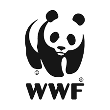

Pakistan is expected to face droughtas early as 2025 yet our waterresource planning lags far behind theinitiatives needed to mitigate andadapt to this alarming reality. AtNARL, we are developing anddeploying state of the art technologyto guide appropriate action in watermanagement from supply based todemand based decision making. Thisinvolves studying irrigationwaterways, monitoring groundwaterconsumption and bridging the gapbetween agricultural, industrial andurban water utilization practices andsustainable water usage.
As a result of climate change andlimited water availability,conventional agricultural practices inPakistan are no longer optimal.Therefore, there is a need to monitornutrient demand and deciency, re-evaluate suitability of crops forcultivation and susceptibility of cropsto diseases. As a result, NARLresearchers are deploying the powerof GIS, drones, in-situ sensors andarticial intelligence to spatially andtemporally map and study Pakistan’sagro-ecological zones in order tooptimize the agricultural farm input,reduce costs, increase crop yield,promote
Water pollution is an added stress onthe availability of water foragricultural, industrial and urbanneeds. NARL initiatives aim toimprove water management throughmonitoring water quality and trashpollution in fresh water streams bydeploying articial intelligence andIoT backed sensor network acrossPakistan.Pakistan’s forest cover area is only 5%of the total land area and underconstant threat with annualdeforestation rate of 1.5% due tourbanization and illegal logging. Thisis destroying habitat and leading tosoil erosion. At NARL, researchers aredeveloping knowledge managementdatabase system powered by IoT,remote sensing and articialintelligence to monitor our preciousforest resources and encourageevidence based decision making andreforestation techniques.
The 5th Annual Workshop on Precision Agriculture andForestry held at LUMS (/news/general-news/5th-annual-workshop-precision-agriculture-and-forestry-held-lums-0)The 5th Annual Workshop on Precision Agriculture and Forestry (WPAF) was held at the Syed Babar Ali School of Scienceand Engineering... Read More (/news/general-news/5th-annual-workshop-precision-agriculture-and-forestry-held-lums-0)

WIT Researcher Attends Underwater AcousticTechnology Workshop in China (/news/general-news/wit-researcher-attends-underwater-acoustic-technology-workshop-china)Taking a lead from the One Belt One Road initiative, The China Pakistan Marine Information Workshop (CPMI) was held inHarbin... Read More (/news/general-news/wit-researcher-attends-underwater-acoustic-technology-workshop-china)
LUMS WIT Researchers Present at 44th AnnualConference of the IEEE Industrial Electronics Society(IES) in USA (/news/general-news/lums-wit-researchers-present-44th-annual-conference-ieee-industrial-electronics-0)The LUMS Water Informatics and Technology (WIT) Centre researchers, Abubakr Muhammad, Zahoor Ahmad and RubabKhalid presented their... Read More (/news/general-news/lums-wit-researchers-present-44th-annual-conference-ieee-industrial-electronics-0)